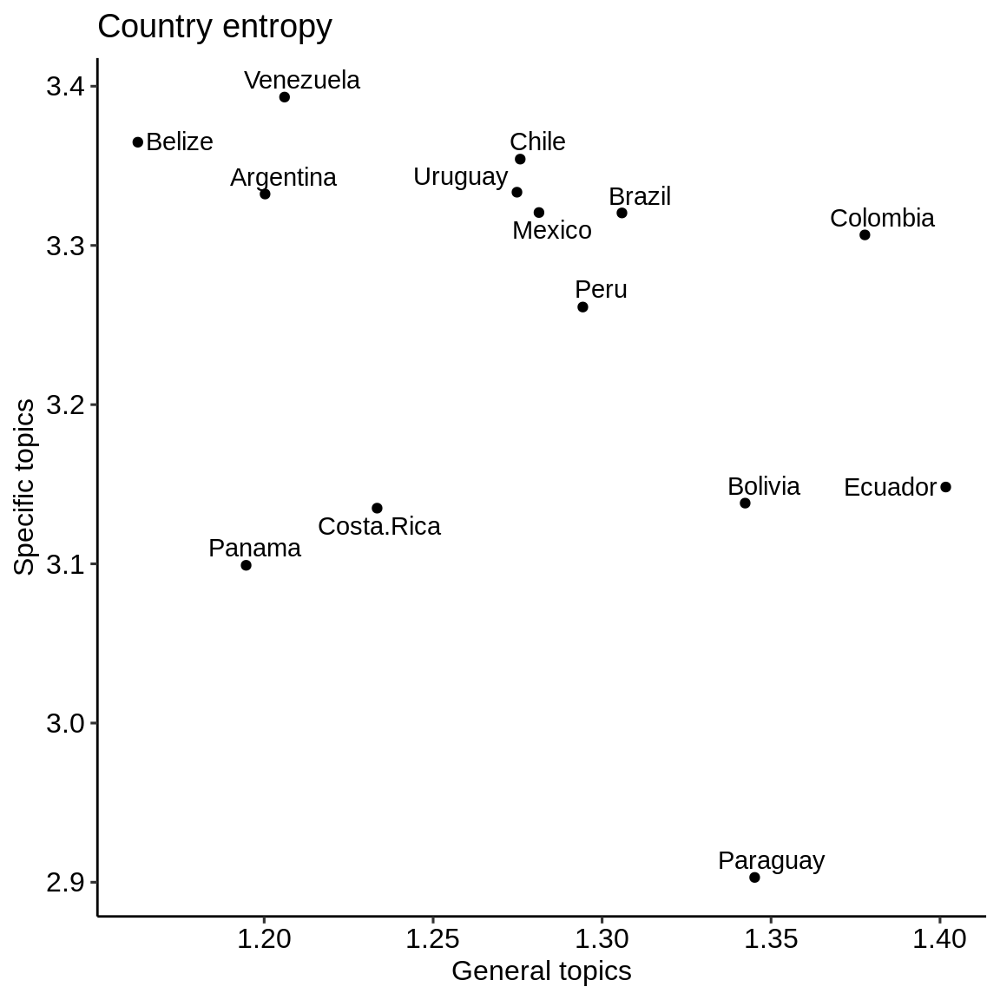

country_entropy.RmdIn this vignette, we derive the entropy at the country level for different categories of topics. Entropy describes how predictable a random variable \(X\) with discrete probability mass function \(P\) over \(n\) outcomes is (Shannon 1948):
\[ H(X) = - \sum_{i=1}^n P(x_i) log_b P(x_i)\]
In our case, \(P(x_i)\) represents the topic probabilities outputted by the topic model. In ecology, entropy is related to diversity through the Shannon-Wiener index. Diversity is used interchangeably with entropy in this vignette and in the function naming.
We access the consolidated results stored in extdata using system.file().
general <- readRDS(system.file( "extdata", "consolidated_results_NSF_general.Rds", package = "wateReview") ) specific <- readRDS(system.file( "extdata", "consolidated_results_NSF_specific.Rds", package = "wateReview") ) methods <- readRDS(system.file( "extdata", "consolidated_results_methods.Rds", package = "wateReview") ) budget <- readRDS(system.file( "extdata", "consolidated_results_water budget.Rds", package = "wateReview") ) theme <-readRDS(system.file( "extdata", "consolidated_results_theme.Rds", package = "wateReview") )
First, we attach the wateReview and dplyr packages.
Then, we calculate the diversity by paper and for all of LAC using the diversity_country() function, largely dependent on vegan::diversity().
relevant_documents <- remove_year_country(specific) # specify which (species group) diversity_LA <- diversity_LAC(relevant_documents) diversity_paper <- vegan::diversity(relevant_documents) general <- diversity_country(general) specific <- diversity_country(specific) budget <- diversity_country(budget) diversity_by_country <- full_join( general, full_join(specific, budget, by = "country"), by = "country") %>% rename(general = x, specific = x.x, budget = x.y)
Here is the resulting table:
diversity_by_country %>% knitr::kable(digits = 3, align = "lccc", format = "html", caption = "Country entropy for general, specific and water budget topics") %>% kableExtra::kable_styling(bootstrap_options = c("hover", "condensed"))
| country | general | specific | budget |
|---|---|---|---|
| Argentina | 1.200 | 3.332 | 2.654 |
| Belize | 1.163 | 3.365 | 2.660 |
| Bolivia | 1.342 | 3.138 | 2.683 |
| Brazil | 1.306 | 3.320 | 2.676 |
| Chile | 1.276 | 3.354 | 2.701 |
| Colombia | 1.378 | 3.307 | 2.668 |
| Costa.Rica | 1.233 | 3.135 | 2.626 |
| Ecuador | 1.402 | 3.148 | 2.663 |
| Mexico | 1.281 | 3.321 | 2.690 |
| Panama | 1.195 | 3.099 | 2.530 |
| Paraguay | 1.345 | 2.903 | 2.283 |
| Peru | 1.294 | 3.261 | 2.619 |
| Uruguay | 1.275 | 3.333 | 2.642 |
| Venezuela | 1.206 | 3.393 | 2.664 |
To visualize the diversity, we attach some visualizations packages and prepare the data for visualization.
library(ggplot2) library(ggpubr) library(ggrepel) library(reshape2) diversity_by_country_graph <- melt(diversity_by_country, id.vars = c("country"))
Now, let’s visualize.
specific_graphdf <- subset(diversity_by_country_graph, variable == "specific") specific_graph <- ggdotchart(specific_graphdf, x = "country", y = "value", #add color = cluster add = "segments", sorting = "descending", rotate = TRUE, ylab = "Entropy across specific topics", xlab = "Country") specific_graph
general_graphdf <- subset(diversity_by_country_graph, variable == "general") general_graph <- ggdotchart(general_graphdf, x = "country", y = "value", #add color = cluster add = "segments", sorting = "descending", rotate = TRUE, ylab = "Entropy across general topics", xlab = "Country") general_graph
budget_graphdf <- subset(diversity_by_country_graph, variable == "budget") budget_graph <- ggdotchart(budget_graphdf, x = "country", y = "value", #add color = cluster add = "segments", sorting = "descending", rotate = TRUE, ylab = "Entropy across water budget topics", xlab = "Country") budget_graph
ggdotchart(diversity_by_country_graph, x = "country", y = "value", color = "variable", rotate = TRUE)
ggplot(diversity_by_country,aes(general, specific, label = country)) + geom_text_repel() + geom_point() + theme_pubr() + labs(x = "General topics",y = "Specific topics", title = "Country entropy")

Shannon, Claude Elwood. 1948. “A Mathematical Theory of Communication.” Bell System Technical Journal 27 (3). Wiley Online Library: 379–423. https://doi.org/10.1002/j.1538-7305.1948.tb01338.x.